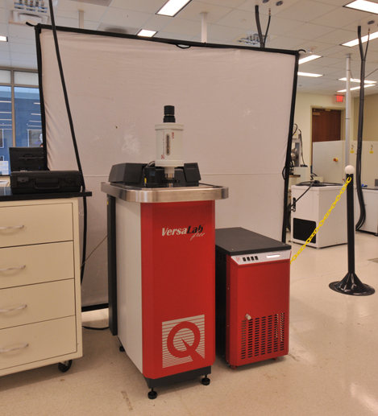

Quantum Design Versalab


General Information
Instrument
VersaLab Vibrating Sample Magnetometer (VSM)
3 Tesla Cryogen-Free VSM
Technique(s)
measurements of magnetic properties
Scheduler
Instrumentation
Basic Specifications
Temperature Control
- Temperature Range: 50 to 400K
- With Oven RT to 1000 oC
- Cool Down Time (300 to 50K): ~ 90 minutes
- Accuracy: ±1% up to full field (3 tesla)
- Slew Rate:
- Minimum: 0.01 K/min.
- Maximum: Varies with sample
- temperature Stability: ±0.02%
Magnet
- ±3 Tesla
- Magnet Type: NbTi Superconducting
- Field Homogeneity: 0.1% over 2.4 cm
- Slew Rate: 0.1 to 300 Oe/sec.
- Field Setting Resolution: 60 mOe
VSM measurement parameters
- VSM oscillation frequency (calibrated): 40 Hz
- Range of 5 to 80 Hz
- VSM oscillation amplitude (typical): 2 mm peak
- Range of 0.1 mm – 5 mm
- Data rate and averaging window (typical): 1 sec
- Range of 0.5 to 750 sec.
- Coil set bore: 6 mm (standard), 1.2 cm (large bore optional)
Sensitivity using the above typical parameters and longitudinal coil set
- rms sensitivity: <10-6 emu or 0.5 % with 1 sec. averaging
- Relative Noise: Larger of (6 x 10-7 emu + 3·10-7 emu/tesla)/ ℘Hz or 0.5%/℘Hz
Accuracy
- Better than 1% or 6 x 10-6 emu with 1 mm amplitude, whichever is greater
- Largest measurable moment: Mmax [emu] = 40/(Peak Amplitude [mm])